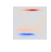

At the heart of machine learning is pattern recognition. We want computers to find patterns in time, patterns in space, patterns within patterns.
Once we know the patterns in the world, we can give them names and use them to communicate. We can infer the unseen whole from an incomplete part. By knowing the ways our patterns change in time — we can begin to predict the future.
Consider the hand written digits above. We first learn as children the patterns of curves, lines and loops; we draw them with crayons and trace them with pencils. Then we learn how these patterns join together to form digits. A loop and a stroke for a nine, two loops make an eight.
Above is a visualisation of one pattern found by showing a learning program pictures of 60,000 handwritten digits.
The program has found that digits often have a horizontal top line or bottom line but not both. This matches our intuition, 5s and 7s have a top line while some 1s and all 2s have a bottom line. There a no digits with both.
Our learning program is a crude model of a tiny brain, with only 500 neurons. So small that we can simulate it in this web–browser. Facinatingly it is still capable of exhibiting many of the features of intelligence.
Below is a live simulation of the 500 neurons in our learning program. With each neuron a visualisation of the patterns that activate them. Click on a digit or draw a new one to see which patterns are activated.
Input digits are reflected by simulated neural activity. Each neuron is sensitive to a specific pattern — if that pattern is present on the retina the related neuron will become active.
The inputs are digested by the brain–model into a collection of patterns. The problem of learning is now about wiring the neurons to the retina in the right way.
“Fire together, wire together” http://en.wikipedia.org/wiki/Hebbian_theory